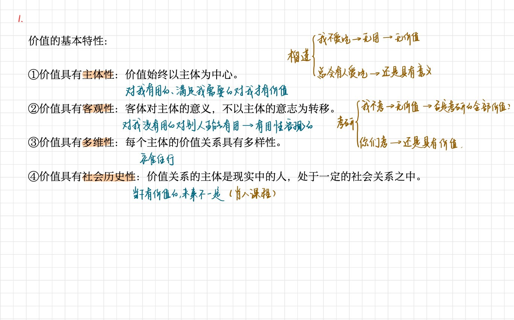
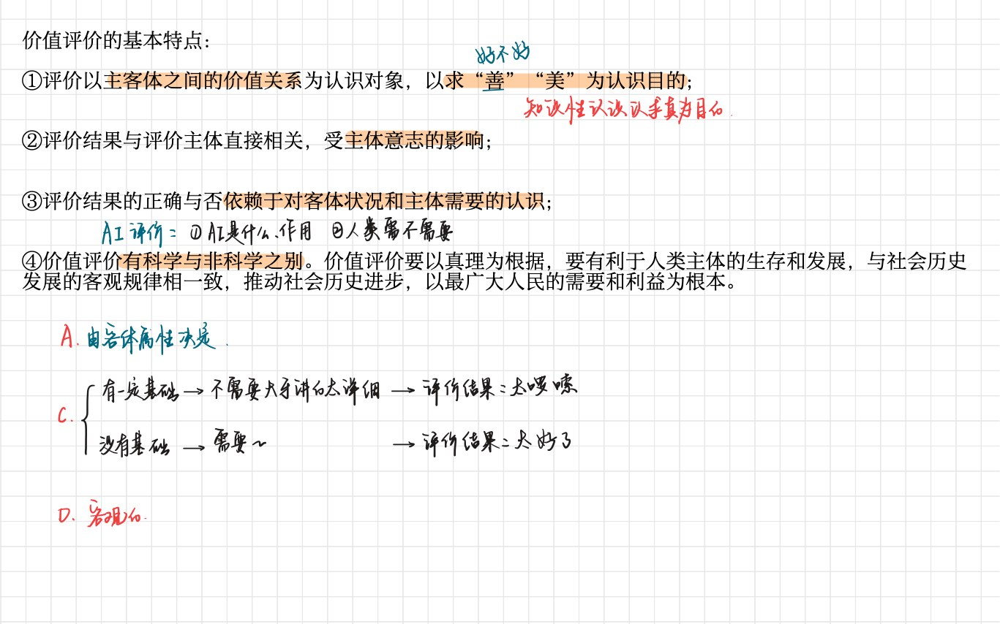

1题单选
视频已定位
价值评价及其特点——评价结果与评价主体直接相关，主体以自身需要作内在尺度
《X八第二套·单选精讲》0:00:00小节：价值评价差异原因


题目原文
餐饮消费、网购体验、旅游出行•••如今，避雷帖在社交平台俯拾皆是，甚至有人说，不管你在网上搜什么东西，不管这个东西总体好评率是高是低，总能碰到避雷帖。在价值评价活动中，评价的差异性是无法避免的，这是因为
A. 客体能否满足主体需要，是由人的主观愿望决定的
B. 价值评价有科学与非科学之别，但评价结果没有正确与错误之分
C. 主体以自身的需要作内在尺度运用于所评价的客体
D. 价值始终以主体为中心，无法独立于人们对它的认识和评价